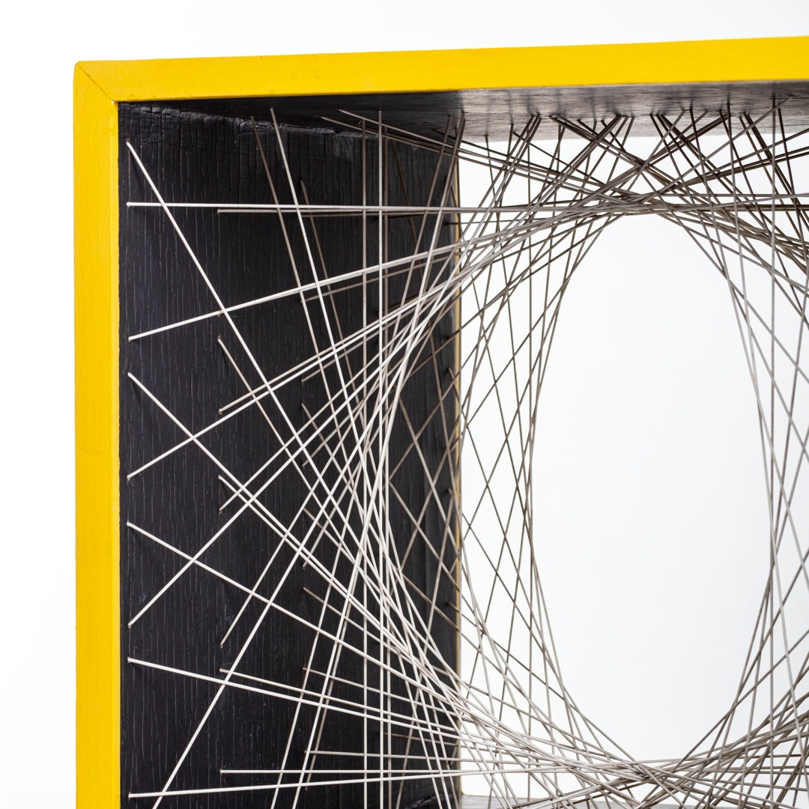

Manfredo Massironi è nato a Padova nel 1937 dove verrà a mancare nel 2011. Nel 1959 è stato uno dei fondatori del gruppo “N”e ha partecipato a importanti mostre nazionali ed internazionali di arte cinetica degli anni ‘60. Laureato in architettura a Venezia, non ha mai presentato le sue ricerche in una mostra personale. Egli contesta che il fare artistico è condizionato da meccanismi obbligati e deprimenti; dopo questo decide di non esporre più. In seguito, insegna psicologia all’università a Roma. Si innamora della psicologia leggendo un libro di arte e percezione visiva, durante i primi anni di architettura. Si concentra sulla percezione dello spazio, studiando come gli ambienti architettonici influenzano il comportamento umano. Nel 1960 Massironi partecipa alla prima mostra del Gruppo “N” allestita negli spazi propri a Padova con il titolo "Nessuno è invitato a intervenire", che provocatoriamente invitava gli spettatori a non intervenire alla manifestazione.

La prima si trova a San Martino di Lupari, realizzata nel 1964. La seconda si trova al Moma a New York, realizzata nel 2007 Alcune altre copie sono in collezioni private. La sfera negativa parla della percezione in senso inverso. Inversa è la costruzione dello spazio, non per costruzione ma per sottrazione. I fili si intrecciano creando un volume negativo, vuoto appunto, dove l’aria compenetra nello spazio occupato dai filamenti. La forma che ne deriva forma un volume sferico che si delinea all’interno dell’involucro di legno. Queste includono sculture e installazioni ed esplorano il rapporto tra spazio, tempo e realtà.